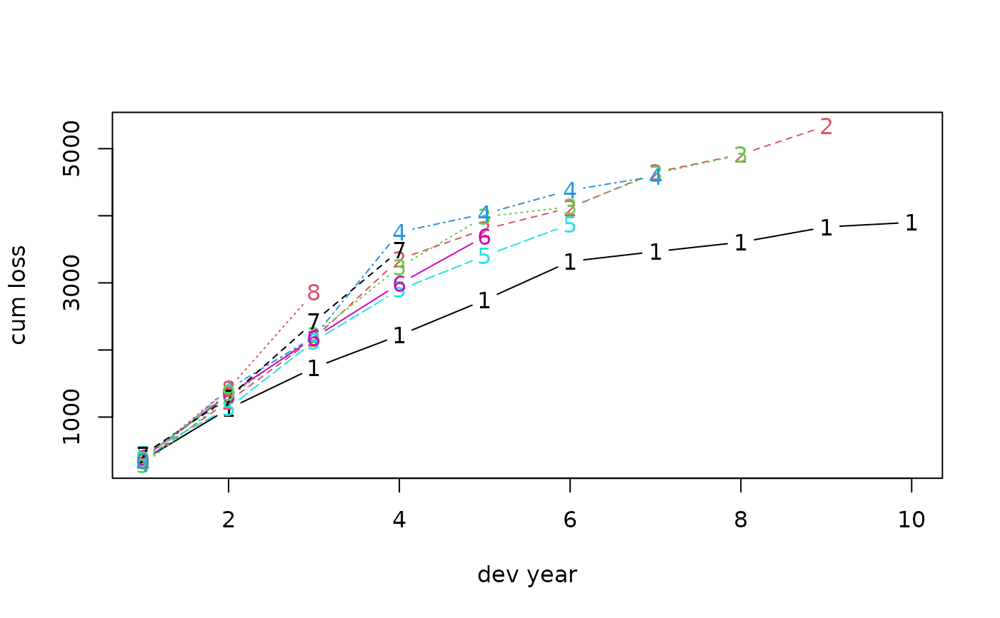
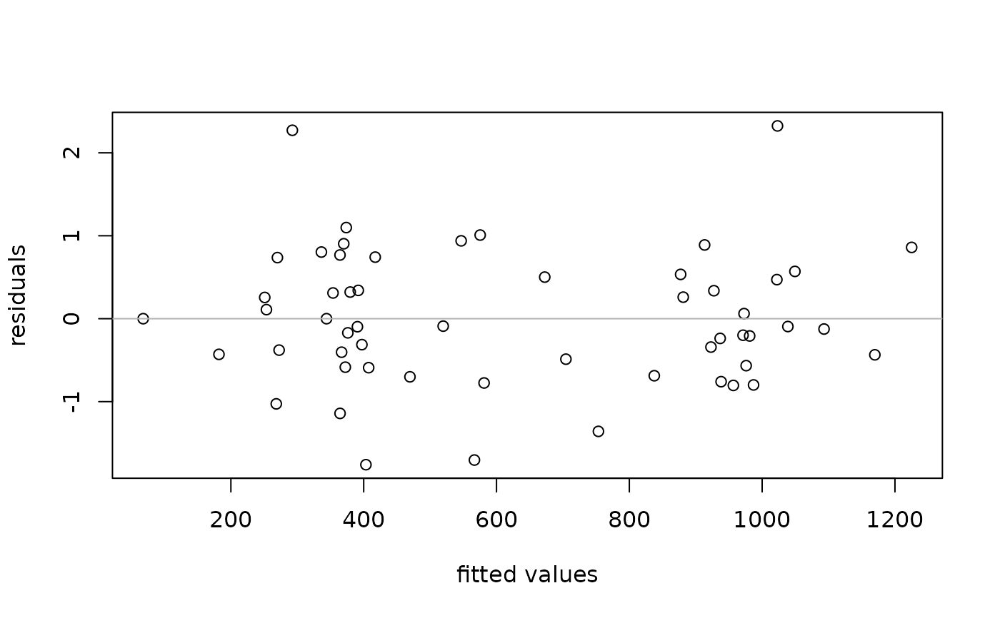

GLM-based Reserving Model
glmReserve.RdThis function implements loss reserving models within the generalized linear model framework. It takes accident year and development lag as mean predictors in estimating the ultimate loss reserves, and provides both analytical and bootstrapping methods to compute the associated prediction errors. The bootstrapping approach also generates the full predictive distribution for loss reserves.
Usage
glmReserve(triangle, var.power = 1, link.power = 0, cum = TRUE,
mse.method = c("formula", "bootstrap"), nsim = 1000, nb = FALSE, ...)Arguments
- triangle
An object of class
triangle.- var.power
The index (p) of the power variance function \(V(\mu)=\mu^p\). Default to
p = 1, which is the over-dispersed Poisson model. IfNULL, it will be assumed to be in(1, 2)and estimated using thecplmpackage. Seetweedie.- link.power
The index of power link function. The default
link.power = 0produces a log link. Seetweedie.- cum
A logical value indicating whether the input triangle is on the cumulative or the incremental scale. If
TRUE, thentriangleis assumed to be on the cumulative scale, and it will be converted to incremental losses internally before a GLM is fitted.- mse.method
A character indicating whether the prediction error should be computed analytically (
mse.method = "formula") or via bootstrapping (mse.method = "bootstrap"). Partial match is supported.- nsim
Number of simulations to be performed in the bootstrapping, with a default value of 1000.
- nb
Whether the negative binomial distribution is used. If
true, the argumentsvar.powerandlink.powerare ignored and a negative binomial GLM is fitted usingglm.nb.- ...
Arguments to be passed onto the function
glmorcpglmsuch ascontrastsorcontrol. It is important thatoffsetandweightshould not be specified. Otherwise, an error will be reported and the program will quit.
Details
This function takes an insurance loss triangle, converts it to incremental losses internally if necessary, transforms it to the long format (see as.data.frame) and fits the resulting loss data with a generalized linear model where the mean structure includes both the accident year and the development lag effects.
The distributions allowed are the exponential family that admits a power variance function, that is, \(V(\mu)=\mu^p\).
This subclass of distributions is usually called the Tweedie distribution and includes many commonly used distributions as special cases.
This function does not allow the user to specify the GLM options through the usual family argument, but instead, it uses the tweedie family internally and takes two arguments, var.power and link.power, through which the user still has full control of the distribution forms and link functions.
The argument var.power determines which specific distribution is to be used, and link.power determines the form of the link function.
When the Tweedie compound Poisson distribution 1 < p < 2 is to be used, the user has the option to specify var.power = NULL, where the variance power p will be estimated from the data using the cplm package. The bcplm function in the cplm package also has an example for the Bayesian compound Poisson loss reserving model.
See details in tweedie, cpglm and bcplm.
glmReserve allows certain measures of exposures to be used in an offset term in the underlying GLM.
To do this, the user should not use the usual offset argument in glm.
Instead, one specifies the exposure measure for each accident year through the exposure attribute of triangle.
Make sure that these exposures are in the original scale (no log transformations for example).
If the vector is named, make sure the names coincide with the rownames/origin of the triangle.
If the vector is unnamed, make sure the exposures are in the order consistent with the accident years, and the character rownames of the Triangle must be convertible to numeric.
If the exposure attribute is not NULL, the glmReserve function will use these exposures, link-function-transformed, in the offset term of the GLM.
For example, if the link function is log, then the log of the exposure is used as the offset, not the original exposure.
See the examples below.
Moreover, the user MUST NOT supply the typical offset or weight as arguments in the list of additional arguments .... offset should be specified as above, while weight is not implemented (due to prediction reasons).
Two methods are available to assess the prediction error of the estimated loss reserves.
One is using the analytical formula (mse.method = "formula") derived from the first-order Taylor approximation.
The other is using bootstrapping (mse.method = "bootstrap") that reconstructs the triangle nsim times by sampling with replacement from the GLM (Pearson) residuals.
Each time a new triangle is formed, GLM is fitted and corresponding loss reserves are generated.
Based on these predicted mean loss reserves, and the model assumption about the distribution forms, realizations of the predicted values are generated via the rtweedie function.
Prediction errors as well as other uncertainty measures such as quantiles and predictive intervals can be calculated based on these samples.
Note
The use of GLM in insurance loss reserving has many compelling aspects, e.g.,
when over-dispersed Poisson model is used, it reproduces the estimates from Chain Ladder;
it provides a more coherent modeling framework than the Mack method;
all the relevant established statistical theory can be directly applied to perform hypothesis testing and diagnostic checking;
However, the user should be cautious of some of the key assumptions that underlie the GLM model, in order to determine whether this model is appropriate for the problem considered:
the GLM model assumes no tail development, and it only projects losses to the latest time point of the observed data. To use a model that enables tail extrapolation, please consider the growth curve model
ClarkLDForClarkCapeCod;the model assumes that each incremental loss is independent of all the others. This assumption may not be valid in that cells from the same calendar year are usually correlated due to inflation or business operating factors;
the model tends to be over-parameterized, which may lead to inferior predictive performance.
To solve these potential problems, many variants of the current basic GLM model have been proposed in the actuarial literature. Some of these may be included in the future release.
Support of the negative binomial GLM was added since version 0.2.3.
Value
The output is an object of class "glmReserve" that has the following components:
- call
the matched call.
- summary
A data frame containing the predicted loss reserve statistics. Similar to the summary statistics from
MackChainLadder.- Triangle
The input triangle.
- FullTriangle
The completed triangle, where empty cells in the original triangle are filled with model predictions.
- model
The fitted GLM, a class of
"glm"or"cpglm". It is most convenient to work with this component when model fit information is wanted.- sims.par
a matrix of the simulated parameter values in the bootstrapping.
- sims.reserve.mean
a matrix of the simulated mean loss reserves (without the process variance) for each year in the bootstrapping.
- sims.par
a matrix of the simulated realizations of the loss reserves (with the process variance) for each year in the bootstrapping. This can be used to summarize the predictive uncertainty of the loss reserves.
References
England P. and Verrall R. (1999). Analytic and bootstrap estimates of prediction errors in claims reserving. Insurance: Mathematics and Economics, 25, 281-293.
Author
Wayne Zhang actuary_zhang@hotmail.com
See also
See also glm, glm.nb, tweedie, cpglm and MackChainLadder.
Examples
data(GenIns)
GenIns <- GenIns / 1000
# over-dispersed Poisson: reproduce ChainLadder estimates
(fit1 <- glmReserve(GenIns))
#> Latest Dev.To.Date Ultimate IBNR S.E CV
#> 2 5339.085 0.98251776 5434.085 95 110.0999 1.1589460
#> 3 4909.315 0.91262828 5379.315 470 216.0434 0.4596668
#> 4 4588.268 0.86599394 5298.268 710 260.8721 0.3674255
#> 5 3873.311 0.79725464 4858.311 985 303.5500 0.3081726
#> 6 3691.712 0.72234788 5110.712 1419 375.0139 0.2642804
#> 7 3483.130 0.61527116 5661.130 2178 495.3780 0.2274463
#> 8 2864.498 0.42221223 6784.498 3920 789.9611 0.2015207
#> 9 1363.294 0.24162052 5642.294 4279 1046.5138 0.2445697
#> 10 344.014 0.06921791 4970.014 4626 1980.1014 0.4280375
#> total 30456.627 0.61982291 49137.627 18681 2945.6609 0.1576822
summary(fit1, type = "model") # extract the underlying glm
#>
#> Call:
#> glm(formula = value ~ factor(origin) + factor(dev), family = fam,
#> data = ldaFit, offset = offset)
#>
#> Deviance Residuals:
#> Min 1Q Median 3Q Max
#> -14.7007 -3.9126 -0.6878 3.6750 15.6327
#>
#> Coefficients:
#> Estimate Std. Error t value Pr(>|t|)
#> (Intercept) 5.598649 0.172924 32.376 < 2e-16 ***
#> factor(origin)2 0.331272 0.153537 2.158 0.03771 *
#> factor(origin)3 0.321119 0.157719 2.036 0.04916 *
#> factor(origin)4 0.305960 0.160736 1.903 0.06499 .
#> factor(origin)5 0.219316 0.167970 1.306 0.19994
#> factor(origin)6 0.270077 0.170756 1.582 0.12247
#> factor(origin)7 0.372208 0.174451 2.134 0.03976 *
#> factor(origin)8 0.553333 0.186525 2.967 0.00532 **
#> factor(origin)9 0.368934 0.239181 1.542 0.13170
#> factor(origin)10 0.242033 0.427562 0.566 0.57485
#> factor(dev)2 0.912526 0.148850 6.131 4.65e-07 ***
#> factor(dev)3 0.958831 0.152569 6.285 2.90e-07 ***
#> factor(dev)4 1.025997 0.156883 6.540 1.33e-07 ***
#> factor(dev)5 0.435276 0.183914 2.367 0.02344 *
#> factor(dev)6 0.080057 0.214770 0.373 0.71152
#> factor(dev)7 -0.006381 0.238290 -0.027 0.97878
#> factor(dev)8 -0.394452 0.310289 -1.271 0.21180
#> factor(dev)9 0.009378 0.320249 0.029 0.97680
#> factor(dev)10 -1.379907 0.896690 -1.539 0.13258
#> ---
#> Signif. codes: 0 ‘***’ 0.001 ‘**’ 0.01 ‘*’ 0.05 ‘.’ 0.1 ‘ ’ 1
#>
#> (Dispersion parameter for Tweedie family taken to be 52.60193)
#>
#> Null deviance: 10699 on 54 degrees of freedom
#> Residual deviance: 1903 on 36 degrees of freedom
#> AIC: NA
#>
#> Number of Fisher Scoring iterations: 4
#>
# which:
# 1 Original triangle
# 2 Full triangle
# 3 Reserve distribution
# 4 Residual plot
# 5 QQ-plot
# plot original triangle
plot(fit1, which = 1, xlab = "dev year", ylab = "cum loss")

# plot residuals
plot(fit1, which = 4, xlab = "fitted values", ylab = "residuals")

# Gamma GLM:
(fit2 <- glmReserve(GenIns, var.power = 2))
#> Latest Dev.To.Date Ultimate IBNR S.E CV
#> 2 5339.085 0.98287950 5432.085 93 45.16637 0.4856599
#> 3 4909.315 0.91654710 5356.315 447 160.55717 0.3591883
#> 4 4588.268 0.88248346 5199.268 611 177.62461 0.2907113
#> 5 3873.311 0.79610759 4865.311 992 254.47093 0.2565231
#> 6 3691.712 0.71757408 5144.712 1453 351.33426 0.2417992
#> 7 3483.130 0.61440292 5669.130 2186 526.28787 0.2407538
#> 8 2864.498 0.43870111 6529.498 3665 941.32225 0.2568410
#> 9 1363.294 0.24853618 5485.294 4122 1175.94587 0.2852853
#> 10 344.014 0.07078457 4860.014 4516 1667.39240 0.3692189
#> total 30456.627 0.62742025 48542.627 18086 2702.70978 0.1494366
# compound Poisson GLM (variance function estimated from the data):
(fit3 <- glmReserve(GenIns, var.power = NULL))
#> Latest Dev.To.Date Ultimate IBNR S.E CV
#> 2 5339.085 0.98269860 5433.085 94 91.59865 0.9744537
#> 3 4909.315 0.91330741 5375.315 466 186.54619 0.4003137
#> 4 4588.268 0.86779562 5287.268 699 223.72322 0.3200618
#> 5 3873.311 0.79709058 4859.311 986 264.76238 0.2685217
#> 6 3691.712 0.72164188 5115.712 1424 333.24690 0.2340217
#> 7 3483.130 0.61505387 5663.130 2180 452.93426 0.2077680
#> 8 2864.498 0.42364843 6761.498 3897 754.58057 0.1936311
#> 9 1363.294 0.24230764 5626.294 4263 1019.45920 0.2391413
#> 10 344.014 0.06942745 4955.014 4611 1910.99069 0.4144417
#> total 30456.627 0.62058068 49077.627 18621 2831.45526 0.1520571
# Now suppose we have an exposure measure
# we can put it as an offset term in the model
# to do this, use the "exposure" attribute of the 'triangle'
expos <- (7 + 1:10 * 0.4) * 100
GenIns2 <- GenIns
attr(GenIns2, "exposure") <- expos
(fit4 <- glmReserve(GenIns2))
#> Latest Dev.To.Date Ultimate IBNR S.E CV
#> 2 5339.085 0.98251776 5434.085 95 110.0999 1.1589460
#> 3 4909.315 0.91262828 5379.315 470 216.0434 0.4596668
#> 4 4588.268 0.86599394 5298.268 710 260.8721 0.3674255
#> 5 3873.311 0.79725464 4858.311 985 303.5500 0.3081726
#> 6 3691.712 0.72234788 5110.712 1419 375.0139 0.2642804
#> 7 3483.130 0.61527116 5661.130 2178 495.3780 0.2274463
#> 8 2864.498 0.42221223 6784.498 3920 789.9611 0.2015207
#> 9 1363.294 0.24162052 5642.294 4279 1046.5138 0.2445697
#> 10 344.014 0.06921791 4970.014 4626 1980.1014 0.4280375
#> total 30456.627 0.61982291 49137.627 18681 2945.6609 0.1576822
# If the triangle's rownames are not convertible to numeric,
# supply names to the exposures
GenIns3 <- GenIns2
rownames(GenIns3) <- paste0(2007:2016, "-01-01")
names(expos) <- rownames(GenIns3)
attr(GenIns3, "exposure") <- expos
(fit4b <- glmReserve(GenIns3))
#> Latest Dev.To.Date Ultimate IBNR S.E CV
#> 2008-01-01 5339.085 0.98251776 5434.085 95 110.0999 1.1589460
#> 2009-01-01 4909.315 0.91262828 5379.315 470 216.0434 0.4596668
#> 2010-01-01 4588.268 0.86599394 5298.268 710 260.8721 0.3674255
#> 2011-01-01 3873.311 0.79725464 4858.311 985 303.5500 0.3081726
#> 2012-01-01 3691.712 0.72234788 5110.712 1419 375.0139 0.2642804
#> 2013-01-01 3483.130 0.61527116 5661.130 2178 495.3780 0.2274463
#> 2014-01-01 2864.498 0.42221223 6784.498 3920 789.9611 0.2015207
#> 2015-01-01 1363.294 0.24162052 5642.294 4279 1046.5138 0.2445697
#> 2016-01-01 344.014 0.06921791 4970.014 4626 1980.1014 0.4280375
#> total 30456.627 0.61982291 49137.627 18681 2945.6609 0.1576822
# use bootstrapping to compute prediction error
if (FALSE) {
set.seed(11)
(fit5 <- glmReserve(GenIns, mse.method = "boot"))
# compute the quantiles of the predicted loss reserves
t(apply(fit5$sims.reserve.pred, 2, quantile,
c(0.025, 0.25, 0.5, 0.75, 0.975)))
# plot distribution of reserve
plot(fit5, which = 3)
}
# alternative over-dispersed Poisson: negative binomial GLM
(fit6 <- glmReserve(GenIns, nb = TRUE))
#> Latest Dev.To.Date Ultimate IBNR S.E CV
#> 2 5339.085 0.98287950 5432.085 93 39.61362 0.4259529
#> 3 4909.315 0.91654710 5356.315 447 133.65746 0.2990100
#> 4 4588.268 0.88197455 5202.268 614 148.48036 0.2418247
#> 5 3873.311 0.79594399 4866.311 993 211.05374 0.2125415
#> 6 3691.712 0.71771359 5143.712 1452 290.03379 0.1997478
#> 7 3483.130 0.61440292 5669.130 2186 433.04985 0.1981015
#> 8 2864.498 0.43836543 6534.498 3670 772.92403 0.2106060
#> 9 1363.294 0.24826462 5491.294 4128 967.75982 0.2344379
#> 10 344.014 0.07075545 4862.014 4518 1380.13957 0.3054758
#> total 30456.627 0.62723935 48556.627 18100 2232.91773 0.1233656